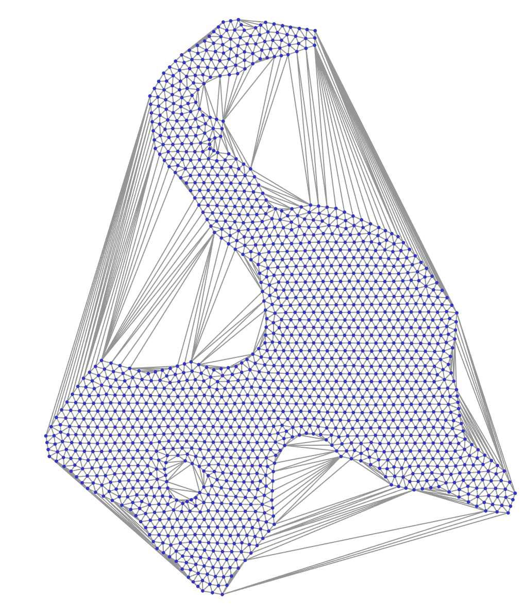

|
CDT
1.4.2
C++ library for constrained Delaunay triangulation
|

|
|
CDT
1.4.2
C++ library for constrained Delaunay triangulation
|
|

CDT is a C++ library for generating constraint or conforming Delaunay triangulations.
x64 and arm64If CDT helped you please consider adding a star on GitHub. This means a lot to the authors ü§©


CDT::IntersectingConstraintEdges::TryResolve)Latest online documentation (automatically generated with Doxygen).
CDT::VertexInsertionOrder:CDT::VertexInsertionOrder::Auto uses breadth-first traversal of a Kd-tree for initial bulk-load [4] and randomized insertion order for the subsequent calls of CDT::Triangulation::insertVertices. Randomization improves performance and avoid worst-case scenarios. Generally vertex insertion with CDT::VertexInsertionOrder::Auto is faster.CDT::VertexInsertionOrder::AsProvided when constructing a triangulation.Pre-conditions:
Post-conditions:
CDT::Triangulation::eraseSuperTriangle: produce a convex-hullCDT::Triangulation::eraseOuterTriangles: remove all outer triangles until a boundary defined by constraint edgesCDT::Triangulation::eraseOuterTrianglesAndHoles: remove outer triangles and automatically detected holes. Starts from super-triangle and traverses triangles until outer boundary. Triangles outside outer boundary will be removed. Then traversal continues until next boundary. Triangles between two boundaries will be kept. Traversal to next boundary continues (this time removing triangles). Stops when all triangles are traversed.CDT::RemoveDuplicatesAndRemapEdges, CDT::RemoveDuplicates, CDT::RemapEdgesCDT port is available in Microsoft's vcpkg.
CDT is not in the conan-center but there's a conanfile.py recipe provided (in this repo). Note that it might need small adjustments like changing boost version to fit your needs.
A recipe for CDT is available in spack.
CDT uses modern CMake and should just work out of the box without any surprises. The are many ways to consume CDT:
add_subdirectoryfind_packageCMake options
| Option | Default value | Description |
|---|---|---|
CDT_USE_64_BIT_INDEX_TYPE | OFF | Use 64bits to store vertex/triangle index types. Otherwise 32bits are used (up to 4.2bn items) |
CDT_USE_AS_COMPILED_LIBRARY | OFF | Instantiate templates for float and double and compiled into a library |
CDT_DISABLE_EXCEPTIONS | OFF | Disables exceptions: instead of throwing the library will call std::terminate |
CDT_ENABLE_CALLBACK_HANDLER | OFF | If enabled it is possible to provide a callback handler to the triangulation |
Adding to CMake project directly
Can be done with add_subdirectory command (e.g., see CDT visualizer's CMakeLists.txt).
Adding to non-CMake project directly
To use as header-only copy headers from CDT/include
To use as a compiled library define CDT_USE_AS_COMPILED_LIBRARY and compile CDT.cpp
Consume pre-build CDT in CMake project with find_package
CDT provides package config files that can be included by other projects to find and use it.
Public API is provided in two places:
CDT::Triangulation class is used for performing constrained Delaunay triangulations.CDT.h provide some additional functionality for removing duplicates, re-mapping edges and triangle depth-peelingℹ️ For more up-to-date code examples please see CDT tests in cdt.test.cpp.
Delaunay triangulation without constraints (triangulated convex-hull)

Constrained Delaunay triangulation (auto-detected boundaries and holes)

Conforming Delaunay triangulation
Use CDT::Triangulation::conformToEdges instead of CDT::Triangulation::insertEdges
Resolve edge intersections by adding new points and splitting edges
Pass CDT::IntersectingConstraintEdges::TryResolve to CDT::Triangulation constructor.
Custom point/edge type
Callbacks
For advanced usage and deep integration with custom algorithms CDT allows to register user callbacks for important events. For example it is possible to do progress reporting or abort triangulation.
⚠️ Callbacks need to be enabled with CDT_ENABLE_CALLBACK_HANDLER.
User needs to implement callback handler by deriving from CDT::ICallbackHandler and register it with CDT::Triangulation::setCallbackHandler. See cdt.test.cpp for usage examples.
For Python bindings check-out PythonCDT
Any feedback and contributions are welcome.
Mozilla Public License, v. 2.0
For attribution you can use the following template:
[1] Marc Vigo Anglada, An improved incremental algorithm for constructing restricted Delaunay triangulations, Computers & Graphics, Volume 21, Issue 2, 1997, Pages 215-223, ISSN 0097-8493.
[2] Borut Žalik and Ivana Kolingerová, An incremental construction algorithm for Delaunay triangulation using the nearest-point paradigm, International Journal of Geographical Information Science, Volume 17, Issue 2, Pages 119-138, 2003, DOI 10.1080/713811749.
[3] Olivier Devillers, Sylvvain Pion, Monique Tellaud, Walking in a triangulation, International Journal of Foundations of Computer Science, Volume 13, Issue 2, Pages 181-199, 2002
[4] Liu, Jianfei & Yan, Jinhui & Lo, S.. A new insertion sequence for incremental Delaunay triangulation. Acta Mechanica Sinica, Volume 29, 2013